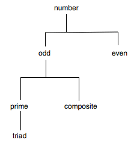
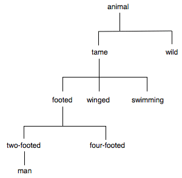

Speusippus
Speusippus of Athens was the son of Plato’s sister Potone; he became head of the Academy on Plato’s death in 348/347 and remained its head for eight years (Diogenes Laertius iv 1), apparently until his death. His date of birth is harder to get a fix on; it has reasonably been estimated at ca. 410. He apparently wrote a lot: “a great many treatises and many dialogues” (ibid. iv 4; Diogenes lists about 30 titles, and his bibliography is on his own admission incomplete). We have very little of what he wrote, if any (we have something from a work later attributed to him, On Pythagorean Numbers, discussed below, but this is not one of Diogenes’ titles; and we may have something preserved in Iamblichus, De communi mathematica scientia iv, also discussed below).
Diogenes tells us (iv 1) that Speusippus “abided by the views of Plato”; from what little we can tell, this is simply false. In particular, Speusippus rejected the Theory of Forms.
References will be to the primary sources; the two most recent collections of the fragments (Isnardi Parente 1980, Tarán 1981) have indices that will enable the reader to locate the texts (Lang 1911 does not). Citations from Plato and Aristotle are to any standard edition; those from other ancient authors are taken from texts listed in the bibliography (translations are in all cases my own, but where an alternative English translation is available, I have given a reference to it).
What we can infer, mostly from Aristotle but with a few supplements from other authors, will be covered under three headings:
- 1. Metaphysics
- 2. Epistemology
- 3. Ethics
- Bibliography
- Academic Tools
- Other Internet Resources
- Related Entries
1. Metaphysics
Aristotle gives us an account of Plato’s metaphysical views that goes considerably beyond what we find in Plato’s dialogues. In fact, Aristotle gives us what he says are Plato’s views and also those of others. From this we learn what little we can about Speusippus and his contemporary, Xenocrates.
According to Aristotle, all three of Plato, Speusippus, and Xenocrates constructed their worlds operating with two principles (archai): the One and something opposed to it. The latter appears under different names, and it looks as if the different names go with different ones among the three: ‘the Indefinite Dyad’ or ‘the large and (the) small’ seem to be the expressions favored by Plato, ‘plurality’ seems to be associated with Speusippus, and ‘the unequal’ with Xenocrates. And for Plato, the One was identified with the Good. These philosophers employed these two principles, according to Aristotle, to generate derivative entities (substances, beings) of other types: Forms, numbers, and so on. This generation was laid out as if it were a process in time, but the generation-story was to be understood instead as one understands a mathematical construction: the construction takes place in time, but what is constructed is an eternal structure. And in this eternal structure the principles were not temporally first, but first in relation to the dependence on them of the things constructed.
These principles are primarily employed by these three thinkers in connection with numbers. But there are two ranges of number operating in Aristotle’s discussions (see Metaphysics I 6, XIII 8–9). There are what he refers to as formal numbers, one for each numeral; these are the (Platonic) Forms for numbers. But since there is only one for each numeral, and a mathematician has to be able to add two and two to get four, there is another range of numbers required: the mathematical numbers, indefinitely many for each numeral n, each of the indefinitely many a collection of n units. As Aristotle has it, Plato accepted both ranges, and Speusippus only mathematical numbers; Speusippus, then, rejects Plato’s Theory of Forms and specifically his belief in formal numbers.
There are only two passages in which Aristotle mentions Speusippus by name in dealing with his metaphysical views: Metaphysics VII 2. 1028b21 and XII 7. 1072b31. Neither passage gives us anything we could call a ‘fragment’: there is no indication that any actual quoting is taking place. But it is from these meager hints that reconstruction of Speusippus’ metaphysics must start.
The method followed in the reconstruction of Speusippus’ views is a matter of chaining: we start from our two anchor texts, and look for other passages in which the views ascribed to him in them are under discussion. Those passages will sometimes bring in new views; we then ascribe those views to Speusippus, and go looking for passages in which those views seem to be alluded to. No one needs to be told how tenuous such chaining is: each link is weak, and compounding probabilities would tell us that a chain of this type is actually weaker than its weakest link. But chaining in that way is all we can do. Fortunately, it results in a fairly coherent picture.
In the first of our two anchor texts, Aristotle, discussing the ways in which people have answered the question ‘what are the substances?’, ascribes to Plato the view that there are not only perceptible substances but eternal ones of two types: forms and mathematical objects. He then says that Speusippus thought there were even more types of substance; he “started from the One” and adopted principles (archai) for each of his types of substance: “one for numbers, another for magnitudes, then for soul”. So we have at least four layers of beings: numbers, magnitudes, souls, and perceptible beings; the One is Speusippus’ starting-point, but he has different principles for each level of being.
In the other of our anchor texts, Aristotle, having just sketched a proof for the existence of an unmoved mover, which he refers to as a principle (arche) and as ‘god’, says something about Speusippus’ views about principles: that he (and the Pythagoreans) suppose that a principle is not characterizable as ‘beautiful’ or ‘good’, going on the analogy of plants and animals, where beauty and goodness emerge in the end state rather than the beginning. So, although we have principles at each level, those principles are not themselves complete entities at that level.
Then we begin chaining.
In Metaphysics XIV 4–5, Aristotle discusses various Platonistic views about the relationships between the first principles and goodness; XIV 4. 1091a34–36 refers to contemporaries of Aristotle’s who deny that the good is among the principles but suppose it comes in later in the development; the second of our two anchor texts warrants the guess that Speusippus is among them. And then some other things about the passage in XIV fall into place: Speusippus’ main way of referring to the principle opposed to the One was ‘plurality’, and, more importantly, he denied a theory about causality that was part of Plato’s Theory of Forms as we find that Theory in, say, the Phaedo: a theory to the effect that the possession of a feature F by a perceptible object was due to its participation in something supremely F that transmits its being F to the perceptible object; as opposed to this ‘Transmission Theory of Causality’, Speusippus adopted what we might call a Principle of Alien Causality: the first cause of Fs is not itself F. This Principle is going to be difficult to formulate, and the word ‘first’ in this formulation needs emphasis: Speusippus surely agrees with Aristotle that the cause of a human being is one or more other human beings, so presumably the Principle has to be restricted in some way to first causes or principles in some more robust sense. Unfortunately, the texts (even the Iamblichean passage cited below) give us no help here.
Metaphysics XIV 5. 1092a11–17 returns to the analogy of animals and plants which XII 7 told us Speusippus used; Aristotle says:
And one does not rightly understand either if one compares the principles of the whole to that of animals and plants, because from indefinite, incomplete things the more complete always arise, which is why he says it holds thus for the first things, so that the one itself is not even a being.
Sticking by our method of chaining, we add to Speusippus’ package the claim that the One is not a being (1092a14–15). And this is an instantiation of the Principle of Alien Causality: the first cause of beings is not itself a being.
Aristotle goes on to speak of “those who say that the beings are derived from elements and that of the beings the numbers are the first” (1092a21–22). And again we may suppose that Speusippus is among them: he would say that the elements, not being so derived, are not beings, and that numbers, derived from those elements, are the first beings. Here we may go back to the first of our anchor texts (Metaphysics VII 2. 1028b21) for some confirmation.
There may be additional confirmation in a more remote source. In a Latin translation of part of Proclus’ commentary on Plato’s Parmenides (the original Greek for this part of the commentary has not survived), Proclus tells us that “the one is prior and a cause of being, therefore it itself according to its existence is not a being, as supporting being; nor does it partake of being”, and that Speusippus also subscribes to this view, although Speusippus states it “as if reporting the sentiments of the ancients.” Unfortunately, if this does go back to Speusippus, it may have been contaminated by neoplatonic elements, for Proclus has Speusippus saying that the ancients thought “the one better than being and that from which the being derives”, and this should not be Speusippus, given his rejection of the claim that the One is good (see above). But Speusippus’ rejection of this claim would have been so bizarre to a neoplatonist that perhaps Proclus simply managed to read past it. Perhaps what Proclus (or his source) read is that the One is ‘above’ being and that from which being derives, and, given his neoplatonic mindset, unhesitatingly thought ‘better than’.
It has seemed to many scholars that Speusippus’ denial that the One is a being gains plausibility from Plato’s Republic: VI 509b2–10 has often been read as placing the Form of the Good (which, according to the tradition stemming from Aristotle, Plato identifies with the One) ‘beyond being’ and so making the top of Plato’s ontological ladder not a being, either. But this is inconsistent with other passages in the Republic in which the Form of the Good is plainly said to be a being (e.g., VII 518cd, 526e), and the phrase often translated ‘beyond being’ in 509b can be read simply as meaning ‘on the far edge of being’. This does not mean that there is nothing pertinent in Plato; there is, in the later dialogues, especially the Parmenides (see below). But Republic VI 509b2–10 cannot be cited in support of Speusippus’ view.
If we accept this much, then, by further chaining, it looks as if we have a quotation or at least paraphrase of Speusippus’ views concerning the One, plurality, the numbers, and even geometrical objects in a chapter of the De communi mathematica scientia (On Mathematical Science in General, hereafter DCMS) of Iamblichus (3rd century C.E.). Iamblichus was a student of Porphyry, who was in turn a student of Plotinus: this is the beginning of Neoplatonism, and there are many resemblances as well as differences between Neoplatonism and Speusippus’ views. But a case has been made (Merlan 1968) for the idea that chapter iv of DCMS contains paraphrase if not quotation from Speusippus.
Iamblichus is known for something that we should call ‘plagiarism’: he often quotes without attribution. This cannot have seemed in any way wrong to him: one of his quotations is a longish stretch from Plato’s Republic, and he is not, of course, claiming that for his own. Presumably it is an act of homage: Iamblichus is thinking that he can certainly not do better for what he wants to say than Plato, so he, with reverence but not attribution, quotes. The hope is that he is doing this in iv. There we read:
For the mathematical numbers one must posit two things, the first and highest principles, the One (which indeed one ought not yet even call a being, because of the fact that it is simple and because of the fact that it is a principle for the things that are, while the principle is not yet such as are the things of which it is a principle), and again another principle, that of plurality, which can in its own right provide division as well, and for this reason we may, by way of making a comparison appropriate to its capacity, assert it to be like some moist and completely pliable matter; from which, the one and the principle of plurality, there is produced the first kind, of numbers, from both of these when combined with the help of some persuadable necessity.
A bit later in the chapter, Iamblichus or his source says:
But it is fit to call the one neither beautiful nor good, because of the fact that it is above the beautiful and the good; for it is when nature proceeds farther away from the things in the beginning that, first, the beautiful appears, and, second, when the elements have an even longer distance, the good.
Also in DCMS iv, we find:
But the elements from which the numbers are produced do not yet belong there as either beautiful or good; but from the combination of the one and the matter that is cause of plurality number exists, and first in these that which is and beauty appear, while next from the elements of lines geometrical substance appears, in which in the same way there is that which is and the beautiful, but in which there is nothing either ugly or bad; but at the extreme in the fourth and fifth levels which are combined from the last elements badness comes-to-be, not directly, but from inadvertence and failing to master something of that which accords with nature.
The picture here is not Iamblichus’ own; rather, it fits with, and expands on, what we so far have of Speusippus. There are four levels of beings, and above them on a level of its own the One, which is not a being.
And here, in the first quoted passage, we are given two arguments to the effect that the One is not a being.
The first is an argument from the assumed simplicity of the One. This corresponds to things we can find in Plato. In what is frequently referred to as the ‘first hypothesis’ of Plato’s Parmenides (137c-142a), Parmenides begins (137c) by laying it down that the One cannot be many; he then argues, first (137cd), that if the One is, it must be without parts, since otherwise it would be many. Subsequent argumentation makes this a proscription against all attempts to predicate anything positive of the One: any such predicate would pluralize the One, make it consist of parts. Ultimately that will include even the predicate ‘being’: it is supposed to follow that the One “in no way is” (141e9–10), that it is not; that is to say, that it is not a being (e11). It is difficult to believe that Plato himself would have bought this argument and its conclusion. He did buy into some of the train of thought: see Sophist 244b-245e. But both Plato (even in the Sophist) and Aristotle seem prepared to infer from a predication of the form ‘S is P’ a conclusion of the form ‘S is’, whereas in the first hypothesis of the Parmenides and in DCMS iv we have an argument that goes from a predication of the form ‘the One is F’ to the conclusion ‘the One is not’. This is not the place to attempt to sort out the relationship between the Platonic passages and Speusippus, but the interesting suggestion has been made (Graeser 1997, 1999; see also Halfwassen 1993) that Plato is responding to Speusippus in the Parmenides. At any rate, the Argument from Simplicity for the One’s not-being goes back to the Academy.
The second argument for the not-being of the One depends explicitly on the Principle of Alien Causality: “the principle is not yet such as are the things of which it is a principle”; hence the principle of beings cannot itself be a being.
After the One comes the second level, the first beings, numbers, and then magnitudes or geometrical shapes: here we first encounter beauty and goodness. And finally the fourth and fifth levels are going to be those of souls and perceptible objects, and it is here that ugliness and badness appear.
The level of numbers comes about when the second principle, plurality, kicks in. One of the more confusing things about this level is that Speusippus seems to have supposed that among the numbers was the number 1: in this he was apparently ahead of his time, for the generally accepted view was that 1 is not a number (for this see Aristotle, Metaphysics, book X, Euclid, Elements vii def. 2, proof of prop. 1, et passim). That Speusippus accepted the number 1 follows from the mathematics of the one extensive fragment of his work that we have: a quotation preserved in pseudo-Iamblichus, Theologumena arithmeticae (see below). But if this is so, it is essential to recall that we are dealing with Aristotle’s ‘mathematical’ numbers, where there is a plurality for each number. So there is a plurality of numbers 1 (so that we can add 1 and 1 to get 2, etc.). Then the One is not the number 1; the latter comes about when you get a plurality of units, any of which counts as a 1, any couple of which counts as a 2, and so on. That the One is not the number 1 is only what we should expect, given the Principle of Alien Causality: the principle for numbers is not itself a number.
Aristotle more than once complains of Speusippus’ ‘episodic’ universe: apparently the train of causality did not start with the One and go down through the various levels, but started anew at each level. This is explicit in Metaphysics VII 2, cited above: Speusippus had new principles for each level of beings. We need not suppose that the One is different at each level of being in Speusippus’ universe; the text in DCMS would have it that the One is the same principle throughout, but because of differences in what it refers to as the ‘matter’ (see quotation above), the One is realized in different ways at each level: as the number 1, or the unit, in plurality at the level of numbers, as the point, in what DCMS calls ‘place’ or, we might translate, ‘locus’, at the level of geometrical figures. The net effect is that what operates at the beginning of the arithmetical level is the realization of the One in plurality, the unit, which, as it were, represents the One at that level, and what operates at the beginning of the geometrical level is the realization of the One in locus, the point, which similarly represents the One at that level.
We may have a fair amount of information about what Speusippus thought about numbers, preserved in pseudo-Iamblichus’ Theologumena arithmeticae (already mentioned). This book is a compilation from various authors: Anatolius, Nicomachus of Gerasa, possibly Iamblichus himself, possibly authors unknown. It discusses various properties of each of the first ten numbers. When it gets to the number 10, the ‘decad’, after a section that looks as if it descends from Nicomachus, it begins to speak of Speusippus and a book of his which it says was entitled ‘On Pythagorean Numbers’ and was compiled from various Pythagorean writings, especially those of Philolaus (82.10–15: that the book had that title and that Philolaus or any other Pythagorean was a source for Speusippus are both problematic claims). After what purports to be a description of the book (82.15–83.5), it introduces a long quotation from Speusippus himself concerning the number 10.
The description preceding the quotation begins (82. 20) with a passage on the first half of Speusippus’ book, telling us that it talked about numbers of various types and the five so-called ‘Platonic solids’ (the tetrahedron or pyramid, the cube, the octahedron, the dodecahedron, and the icosahedron, assigned in the Platonic tradition starting with Timaeus 54d-56b to the elements of which the universe was composed and to the universe itself or to the fifth element, ether). This is relatively unproblematic.
The second half of the book, the author tells us, was about the number 10, the decad. Unfortunately, the description of that half of the book that precedes the quotation contains some wording which it seems impossible to ascribe to Speusippus. The author tells us that Speusippus showed that the number 10 was “a sort of artistic form for the cosmic accomplishments, obtaining in its own right (and not because we use it nor as it happens), and lying before the god that is maker of the all as an all-complete paradigm” (De Falco/Klein 1975, p. 83.2–5, Waterfield 1988, p. 112). The trouble is that we have already got Speusippus rejecting the Theory of Forms, and in particular denying that aspect of the Theory in which the forms are treated as ‘paradigms’: ideal cases that transmit their properties to things that participate in them.
As it happens, this passage is too good to be true: it is almost verbatim what Nicomachus himself wants (see Nicomachus’ Introductio arithmeticae I vi 1, Hoche 1866 p. 12.1–12, D’Ooge et al. 1926 p. 189 e.g.). So it seems best not to ascribe it to Speusippus.
The quotation itself is another matter. But it, too, offers a problem: if Speusippus is telling us what Pythagoreans (perhaps especially including Philolaus) thought, need he be subscribing to the views himself? Speusippus and Xenocrates, among others, were part of a revival of interest in Pythagoreanism within the Academy; it is often thought that in the course of this revival Pythagorean views became distorted through the attempt to assimilate them to the views of one or another member of the Academy: the revival plainly involved Academicians adopting the views they were ascribing to the Pythagoreans. And as for our quotation from Speusippus, what text we have certainly shows no disposition on his part to be critical of the views he is allegedly reporting. So perhaps the best conclusion to adopt, albeit very tentatively, is that he endorses these views.
In the quotation Speusippus tells us that the number 10 is ‘perfect’ or ‘complete’. The explanation in Euclid vii Def. 23 (Heiberg/Stamatis 1970 p. 105; Def. 22 in Heath 1926 p. 278) for the phrase ‘perfect number’ is ‘number that is the sum of its proper divisors’. This makes the first perfect numbers 6, 28, and 496: 10 is not a perfect number in this sense. Rather, Speusippus appears to be speaking of 10 as ‘perfect’ or ‘complete’ in a way that fits with his claim that completeness is not there in the beginning but only comes on once the universe has proceeded a certain way, in particular, far enough that we can speak of numbers. What he means can be illustrated by a single example.
He tells us that a perfect number has to be even, since otherwise it would contain more odd numbers than even ones: a perfect number must have equally many odd and even numbers in it. On that basis he pronounces 10 perfect.
This does not look like a mathematically (or philosophically) interesting conception of perfect numbers, and the same is true of the other points Speusippus makes in favor of the perfection of the number 10. But it does incorporate one feature of great interest: on the face of it, if Speusippus thinks that within the number 10 there are just as many odd as even numbers, he must be counting 1 as an odd number, and therefore a number. (The alternative, which actually must finally be considered seriously, is that he is not counting 2 as a number, either, but this does not seem likely.) That makes him, as already noted, an exception in his time and place.
When we try to consider Speusippus’ metaphysical views as they bear on the other levels of his universe, unfortunately, we have virtually nothing further to tell us what is going on: nothing that tells us either what might be the representative of the One or what the material principle might be at the level of souls, or at the level of perceptible bodies. A passage in Stobaeus (Eclogues I 49.32, Wachsmuth & Hense 1884 p. 364.2–7) that apparently descends from Iamblichus’ De anima tells us that he defined the soul “by the extended in every direction”, but this continues to resist interpretation.
2. Epistemology
Aristotle says, in Posterior Analytics II 13. 97a6–11:
There is no need for one who is defining and dividing to know all the things that are. And yet some say that it is impossible to know the differences between something and each other thing while one does not know each other thing, and without the differences one cannot know each thing, for a thing is the same as that from which it does not differ, and it is other than that from which it differs.
The ancient commentators (see esp. Anonymous In An. post. 584.17–585.2, where the ascription is credited to Eudemus) tell us that this is Speusippus’ position (it has antecedents in Plato, Philebus 18c and Theaetetus 208c-e).
It is a version of what is sometimes called ‘holism’: knowing something involves knowing where it is located among everything else. In this particular context, knowing a thing appears to be a matter of knowing its definition, and its definition is something arrived at by the Platonic method of division (there is room for controversy here: see Falcon 2000). An example suggested by what Aristotle says elsewhere in this same chapter (96a24-b1, much simplified) might be an attempt to define the number 3 as follows:
(Dtriad) a triad =df a number, odd, prime
We reach this definition by successive divisions:

And then the view being ascribed to Speusippus is that knowing the number 3 is knowing where 3 is on such a grid, along with knowing where every other number on the grid is.
It is very difficult to imagine sustaining this epistemological holism. It might seem easier if we confined the view to things like mathematics. But we already know that Speusippus’ universe extended beyond the realm of mathematical objects, and it seems quite likely that another division suggested by Aristotle in that chapter (96b30–35) would be acceptable (at least in principle) to Speusippus:

The difficulty of sustaining the idea that knowing man is a matter of knowing its position on a tree that locates absolutely every animal, or even every ensouled thing, or (worse yet) absolutely everything, is enormous. But it looks as if Speusippus would have been committed to this.
For we find this in Sextus Empiricus, Adversus mathematicos vii 145–146 (Bury 1935 pp. 80, 81):
… but Speusippus said that, since of things some are perceptible and others intelligible, the criterion of the intelligible ones is the scientific account, and that of the perceptible ones is the scientific perception. Scientific perception he understood to be that which partakes of the truth in accordance with the account. For just as the fingers of the flautist or harpist have an artistic actuality, yet one that is not completed in them in the first instance, but perfected on the basis of discipline conforming to reasoning, and as the perception of the musician has an actuality that can grasp what is in tune and what is out of tune, and this is not self-grown but comes about on the basis of reasoning, so also the scientific perception partakes of its scientific practice as naturally derived from the account, leading to the unerring discrimination of the subjects.
The use of the word ‘scientific’ should not lead one away from the main point: it translates a word that means ‘pertaining to knowledge’, and Speusippus is claiming that there is knowledge at the level of perceived objects. There is no indication that he gave up his holism at this point. So he seems to be committed to defending a rather drastic position.
And he seems to have pursued knowledge at the level of perceived objects with considerable zeal. We have book-titles such as Definitions and Likes in which Speusippus apparently attempted with some zeal to locate various species of plants and animals on something like a division-tree, although the details are not extant. What we hear about Speusippus’ efforts is, for example:
MARSHWORTS: Speusippus in book II of Likes says they grow in water, their leaf resembling marsh celery. (Athenaeus II 61c; Gulick 1927 pp. 266, 267.)
Speusippus in the Likes calls the melon a ‘gourd’. (Athenaeus II 68e; Gulick 1927 pp. 298, 299.)
Speusippus in book II of Likes says that trumpet-shells, purple-fish, snails, and clams are similar. … Again, Speusippus enumerates next in order, in a separate division, clams, scallops, mussels, pinnas, razorfish, and in another class oysters, limpets. (Athenaeus III 86c,d; Gulick 1927 pp. 372, 273.)
Speusippus in book II of Likes says that, of the soft-shells, the crayfish, lobster, mollusc, bear-crab, crab, paguros are similar. (Athenaeus III 105b; Gulick 1927 pp. 450, 451.)
There are a total of twenty-five such citations in Athenaeus. Most simply record that Speusippus said one organism was like another (as with the last two), or simply record differences of terminology that happened to catch Athenaeus’ eye (as with the second one). The only one that promises anything more is the first one above, and that hardly promises much. But it has been supposed (see Tarán 1981) that it implies that Speusippus differentiated species of animals on the basis of features that would not have counted as differentiae in Aristotle’s way of classifying animals: differences of locale. And it is certainly possible that Speusippus’ holism involved a rejection of Aristotle’s essence-accident distinction: if we take the text quoted above from Aristotle as implying that someone who knows marshworts must know every respect in which they are like or unlike every other organism in the universe, and every such differentiating feature is as good as any other in defining them, then we have abandoned the project of differentiating organisms as it appeared to Aristotle.
This line of thought has suggested to some (see Tarán 1981) that the criticism of the Method of Division in Aristotle’s Parts of Animals I 2–3 constitutes a criticism of Speusippus. This possibility remains highly controversial.
It appears from Simplicius’ Commentary on Aristotle’s Categories (Kalbfleisch 1907 38.19–24) that Speusippus applied his method of division, however it worked, to language: there we hear of a division of terms even more elaborate than Aristotle’s in the opening chapter of the Categories: there we hear of homonyms, synonyms, and paronyms, but Speusippus differentiated between tautonyms (uses of the same term), within which there are homonyms (same term but different definitions) and synonyms (same term and same definition), and heteronyms (different terms), within which there are heteronyms proper (different names, different things), polyonyms (many names, the same thing), and paronyms (as in Aristotle: different terms and different things, with one term derivative from another, as ‘courageous’ and ‘courage’). Whether this classification was not only more elaborate than Aristotle’s, but also had a different basis (that in Aristotle being a classification of things according to how they are referred to, that in Speusippus being a classification of terms themselves), is in dispute (Barnes 1971, Tarán 1978).
Finally, we know a little bit about Speusippus’ attitude toward the epistemology of mathematics. Assuming that Aristotle in Metaphysics XIV 3. 1090a25–29, 35-b1 is discussing Speusippus (he is talking about “those who say there is only the mathematical number”), Speusippus held that the truths of mathematics are not about perceptible things, and that the axioms from which they follow “fawn on the soul”: that is, perhaps, suggest themselves. And Proclus tells us this (Commentary on Book I of Euclid’s Elements, Friedlein 1873 p. 179.8–22; Morrow 1970 p. 141):
For universally, Speusippus says, of the things for which the understanding is making a hunt, some it puts forward without having made an elaborate excursion, and sets them up for the investigation to come: it has a clearer contact with these, even more than sight has with visible things; but with others, which it is unable to grasp straight off, but against which it makes its strides by inference, it tries to effect their capture along the lines of what follows.
So we begin from some sort of intuition by which the axioms suggest themselves and proceed from them to the rest of the mathematical truths.
We also hear from Proclus of a dispute in the Academy between some, whom we might call ‘constructivists’, who saw mathematics as something like a human construct, and referred to the truths of geometry as ‘problems’, demanding geometrical constructions, and others, whom we might think of as ‘mathematical realists’, who saw mathematics as describing an eternal, unchanging realm of objects, and referred to the truths of mathematics as ‘theorems’ or ‘objects of contemplation’. Proclus says (Friedlein 1873 pp. 77.15–78.6; Morrow 1970 pp. 63–64):
But already among the ancients, some demanded that we call all of the things that follow from the principles theorems, as did Speusippus, Amphinomus, and those around them, thinking that for the theoretical branches of knowledge the appellation ‘theorems’ was more appropriate than ‘problems’, especially in that they make their accounts about eternal things. For there is no coming-to-be among the eternal things, so that the problem could have no place with them, it requiring a coming-to-be and making of that which was not before, e.g. constructing an equilateral triangle or describing a square when a line is given, or placing a line at a given point. So they say it is better to say that all these things are, but that we look at their comings-to-be not by way of producing them but by way of knowing them, treating the things that always are as if they were coming-to-be.
So Speusippus, as we might have predicted from the foregoing, was firmly in the realist camp.
3. Ethics
Speusippus certainly wrote about ethics: the bibliography in Diogenes lists (in iv 4) one book each on wealth, pleasure, justice, and friendship. But we have nothing that can be properly called a fragment.
We have already seen that Speusippus rejected Plato’s Theory of Forms, and that he refused to place the good among the metaphysical first principles. So he was not obviously prone to the objections of Aristotle against Platonic ethics in Nicomachean Ethics I 6, the general upshot of which is that Plato’s theory puts the Good out of human reach.
Speusippus appears to have adopted a rather down-to-earth goal, and in this he is a lead-in to Hellenistic concerns. Hellenistic ethics is dominated by the identification of the ideal of human happiness as ‘undisturbedness’ (ataraxia). According to Clement, Stromata II 22, 133 (Stählin 1939 p. 186.19–23):
Speusippus, Plato’s nephew, says that happiness is the completed state in things that hold by nature, or possession of goods, for which condition all men have desire, while the good ones aim at untroubledness (aochlesia). And the excellences are productive of happiness.
These formulations ‘anticipate’ Stoic and Epicurean ones: the emphasis on ‘natural’ conditions is a feature of Stoicism, and the notion of ‘untroubledness’ is found in Epicurus (see To Menoeceus, in Diogenes Laertius x 127).
There is an argument implicit in the clause “for which all men have desire, while the good ones aim at untroubledness” that fits in perfectly with a debate about the good and happiness that we know from Aristotle to have been current in the Academy, and in which Speusippus played a leading role. Nicomachean Ethics X 2 begins (1172b9–10):
Eudoxus, then, thought pleasure to be the good because he saw all things, both rational and irrational, aiming at it, ….
This sort of ‘Universal Pursuit Argument’ is one that became very popular in the Hellenistic period; here we have Eudoxus applying it in favor of the claim that pleasure is the good: ‘hedonism’. And Speusippus strenuously denied hedonism (see below).
We might, then, see Speusippus responding to the Universal Pursuit Argument construed as favoring hedonism by saying: we should not care about what all things in general aim at, but at what human beings aim at, in fact, more specifically, the good ones among them, and what human beings pursue is not pleasure, but the completed state in things that hold by nature, and the good ones, more specifically, pursue untroubledness. The word ‘untroubledness’, aochlesia, comes from a verb ochleein that can just mean ‘to move’, so untroubledness might well suggest a certain stillness, lack of motion. This will fit with Speusippus’ views on pleasure and pain.
Before we turn to those, we have a little more with which to flesh out Speusippus’ idea of the good for man; none of it, regrettably, is supplied with argument.
Cicero, in various places, ascribes a view to “Aristotle, Speusippus, Xenocrates, and Polemon” which he himself rejects. In the Tusculan Disputations he enumerates (V x 29) various things such as poverty, ingloriousness, loneliness, pain, ill health, etc., which many people (but not he: his own view is the Stoic one that virtue all by itself guarantees happiness) take to be bad things, and then says (V x 30, King 1927 pp. 454/455–456/457):
Therefore I do not easily give in to … those ancients, Aristotle, Speusippus, Xenocrates, and Polemon, since they count the things I have enumerated above among the bad things, and these very people say that the wise man is always happy.
Cicero is, in the last clause, accusing these people of inconsistency: they think the wise man is always happy, and yet they think there are things such as wealth and health the lack of which would bring about unhappiness.
Seneca (Epistulae morales 85.18, Reynolds 1965 i 292, Gummere 1920 pp. 294, 295) says:
Xenocrates and Speusippus think that one can become happy even by virtue alone, but not that there is one good, that is morality (honestum).
This can be seen as expressive of the same reservation Cicero had. If Speusippus and Xenocrates espoused the view that the virtuous man was always happy but thought that there were non-moral evils such as poverty and pain, then they thought that there were non-moral good things as well: the absence of poverty and the absence of pain. So (on Cicero’s and Seneca’s account) they were not consistent in maintaining that virtue (which incorporates only moral goods) was sufficient for happiness.
And it appears that Speusippus and Xenocrates did think that there were non-moral goods; Plutarch, in De communibus notitiis adversus Stoicos 13. 1065a (Cherniss 1976 pp. 704, 705) refers to Speusippus and Xenocrates as “thinking that health is not indifferent and wealth not useless”.
We are left with two views to ascribe to Speusippus (and to Xenocrates): that wisdom, or virtue in general, is sufficient for happiness, and that there are non-moral goods the lack of which conduces to unhappiness. Cicero’s question as to how these can be rendered consistent is a good one, and we have no information about how Speusippus might have answered it.
Let us turn to the one other topic about which we have some purchase on Speusippus’ ethical views: that of pleasure. Aulus Gellius, Atticae noctes IX v 4 (Marshall 1968 p. 284, Rolfe 1927 pp. 168, 169):
Speusippus and the entire old Academy say that pleasure and pain are two evils opposed to each other, but that the good is what is in the middle between the two.
The inclusion of the rest of the Academy along with Speusippus is presumably due to the influence of Cicero’s teacher Antiochus’ unifying efforts. At any rate, there is confirmation that this was Speusippus’ view, from two passages in Aristotle’s Nicomachean Ethics: VII 13, which names Speusippus, and X 2. 1173a5–13, which does not, but repeats the argument of the former passage.
In the first of those chapters (in 1153b1–7) Aristotle mentions Speusippus as having attacked the claim that pleasure is something good. He had canvassed arguments to the effect that pleasure is a bad thing earlier in the chapter, and some of the arguments certainly sound like Speusippus (1152b12–20):
And so, in favor of the claim that pleasure is not a good at all, it is argued (1) that every pleasure is a perceptible coming-to-be toward a natural state, while no coming-to-be is of the same kind as its ends, e.g. no house-building is of the same kind as a house. (2) Again, the temperate man avoids pleasures. (3) Again, the intelligent man pursues what is painless, not what is pleasant. (4) Again, pleasures are a hindrance to reflecting, and by as much as one enjoys them, by that much are they more of a hindrance, as with the pleasure of sex; for no one could think in the course of that. (5) Again, there is no art of pleasure, although everything good is the work of an art. (6) Again, children and wild animals pursue pleasures.
Assuming that we correctly understood Speusippus’ response to the Universal Pursuit Argument, (2), (3), and (6) are consonant with that response.
But (1) plainly echoes material in Plato’s Philebus (see esp. 53c–55a). And that leads to the interesting suggestion that in that dialogue Plato is entering the dispute between Eudoxus and Speusippus. It has been suggested independently of that passage that Speusippus is lurking behind the ‘harsh thinkers’, the anti-hedonists, of 44a-47b (Schofield 1971, Dillon 1996).
If that is right, and if Graeser’s suggestion that Plato in the Parmenides is responding to some of Speusippus’ metaphysical views, it is plain that the understanding of some of what is going on in late Plato would be aided by an understanding of what was going on in Speusippus. The loss of his writings is regrettable indeed.
Bibliography
- Athenaeus: see Gulick 1927.
- Barnes, Jonathan, 1971, “Homonymy in Speusippus and Aristotle”, Classical Quarterly, 21: 65–80.
- Bury, R.G., 1935, Sextus Empiricus, 4 volumes, Against the Logicians (Volume II), Cambridge, Massachusetts: Harvard University Press; London: William Heinemann Ltd.; Loeb Classical Library: Greek with facing English translation.
- Cherniss, Harold, 1976, Plutarch’s Moralia, vol. xiii part ii: 1033A–1086B, Cambridge, Massachusetts: Harvard University Press; London: William Heinemann Ltd.; Loeb Classical Library: Greek with facing English translation.
- Cicero (see King 1927).
- Clement (see Stählin 1939).
- Dancy, R.M., 1989, “Ancient Non-Beings: Speusippus and Others”, Ancient Philosophy, 9: 207–243; revised reprint in R.M. Dancy, 1991, Two Studies in the Early Academy, Albany, New York: State University of New York Press, 63–119, 146–178. More detailed discussion of Speusippus’ metaphysics.
- De Falco, V., 1975, [Iamblichus:] Theologumena arithmeticae, U. Klein (ed.), Stuttgart: B.G. Teubner.
- Dillon, John, 1984, “Speusippus in Iamblichus”, Phronesis, 29(3): 325–332.
- –––, 1996, “Speusippus on Pleasure”, in Polyhistor: Studies in the History and Historiography of Ancient Philosophy Presented to Jaap Mansfeld on His Sixtieth Birthday [Philosophia Antiqua 72], Keimpe A. Algra, Pieter W. van der Horst, & David T. Runia (eds.), Leiden & New York: E.J. Brill, 99–114.
- –––, 2003, The Heirs of Plato: A Study of the Old Academy (347–274 B.C.), Oxford: Clarendon Press; New York: Oxford University Press.
- Diogenes Laertius (see Hicks 1925, Marcovich 1999).
- D’Ooge, Martin Luther, Frank Edleston Robbins, & Louis Charles Karpinski, 1926, Nicomachus of Gerasa: Introduction to Arithmetic, New York & London: Macmillan.
- Döring, A., 1903, “Eudoxos von Knidos, Speusippos, und der Dialog Philebos”, Vierteljahrsschrift für wissenschaftliche Philosophie und Soziologie, 27: 113–129.
- Euclid (see Heiberg/Stamatis 1970, Heath, 1926).
- Falcon, Andrea, 2000, “Aristotle, Speusippus, and the Platonic Method of Division”, Classical Quarterly, 50: 402–414.
- Festa, N., 1975, Iamblichus: De communi mathematica scientia, U. Klein (ed.), Stuttgart: B.G. Teubner.
- Friedlein, G., 1873, Procli Diadochi in primum Euclidis Elementorum commentarii, Leipzig: B.G. Teubner.
- Gellius, Aulus (see Marshall 1968, Rolfe 1927).
- Graeser, Andreas, 1997, “Platon gegen Speusipp: Bemerkungen zur ersten Hypothese des Platonischen Parmenides”, Museum Helveticum, 54: 45–47.
- –––, 1999, “Anhang: Probleme der Speusipp-Interpretation”, Prolegomena zu einer Interpretation des zweiten Teils des Platonischen Parmenides [Berner Reihe philosophischer Studien 25], Bern, etc.: Verlag Paul Haupt, 41–53.
- Gulick, Charles Burton, 1927, Athenaeus: The Deipnosophists, vol. i: Books I-III.106e, Cambridge, Massachusetts: Harvard University Press; London: William Heinemann Ltd.; Loeb Classical Library: Greek with facing English translation.
- Gummere, Richard M., 1920, Seneca: Ad Lucilium Epistulae morales, vol. ii, Cambridge, Massachusetts: Harvard University Press; London: William Heinemann Ltd.; Loeb Classical Library: Latin with facing English translation.
- Halfwassen, Jens, 1992, “Speusipp und die Unendlichkeit des Einen: Ein neues Speusipp-Testimonium bei Proklos und seine Bedeutung”, Archiv für Geschichte der Philosophie, 74: 43–73.
- –––, 1993, “Speusipp und die metaphysische Deutung von Platons ‘Parmenides’”, in HEN KAI PLETHOS / Einheit und Vielheit: Festschrift für Karl Bormann zum 65. Geburtstag [Religionswissenschafliche Studien 30], Ludwig Hagemann & Reinhold Glei (eds.), Echter: Oros Verlag, 330–373.
- Heath, Thomas L., 1926, Euclid: The Thirteen Books of the Elements, vol. ii, Cambridge: Cambridge University Press.
- Heiberg, J.L., 1970, Euclidis Elementa, vol. ii, E.S. Stamatis (ed.), Leipzig: B.G. Teubner.
- Hicks, R.D., 1925, Diogenes Laertius: Lives of Eminent Philosophers, 2 vols., Cambridge, Massachusetts: Harvard University Press; London: William Heinemann Ltd.; Loeb Classical Library: Greek with facing English translation.
- Hoche, R., 1866, Nicomachi Geraseni Pythagorei Introductionis arithmeticae libri II, Leipzig: B.G. Teubner.
- Iamblichus (see De Falco 1975, Festa 1975).
- Isnardi Parente, Margherita, 1980, Speusippo: Frammenti; Edizione, traduzione e commento [Istituto Italiano per gli Studi Filosofici, La Scuola di Platone 1], Naples: Bibliopolis; the only edition of the fragments with a translation (Italian).
- Kaklamanou, Eleni, 2012, “Speusippus on Cognitive Sense Perception: Sextus Empiricus M 7.145-6”, British Journal for the History of Philosophy, 20: 1183–1193.
- Kalbfleisch, C., 1907, Simplicii in Aristotelis Categorias commentarium [Commentaria in Aristotelem Graeca 8], Berlin: G. Reimer.
- King, J.E., 1927, Cicero: Tusculan Disputations, Cambridge, Massachusetts: Harvard University Press; London: William Heinemann Ltd.; Loeb Classical Library: Latin with facing English translation.
- Krämer, Hans Joachim, 1969, “EPEKEINA TES OUSIAS: Zu Platon, Politeia 509B”, Archiv för Geschichte der Philosophie, 51: 1–30. (Defends the view of this passage rejected above.)
- Lang, Paul, 1911, De Speusippi academici scriptis accedunt fragmenta, Bonn; reprint, Hildesheim: G. Olms, 1965.
- Marcovich, Miroslav, 1999, Diogenis Laertii Vitae philosophorum, 2 vols., Stuttgart & Leipzig: B.G. Teubner.
- Marshall, P.K., 1968, A. Gellii Noctes Atticae, vol. i, Oxford: Clarendon Press.
- Merlan, Philip, 1968, “Speusippus in Iamblichus”, in Merlan, From Platonism to Neoplatonism, The Hague: Martinus Nijhoff, 3rd edition, 96–140.
- Morrow, Glenn R., 1970, Proclus: A Commentary on the First Book of Euclid’s Elements, Princeton, New Jersey: Princeton University Press.
- Nicomachus (see Hoche 1866, D’Ooge et al. 1926).
- Plutarch (see Cherniss 1976).
- Proclus (see Friedlein 1873, Morrow 1970).
- Reynolds, L.D., 1965, L. Annaei Senecae: Ad Lucilium Epistulae Morales, 2 vols., Oxford: Clarendon Press. Latin text.
- Rolfe, John C., 1927, The Attic Nights of Aulus Gellius, vol. ii, Cambridge, Massachusetts: Harvard University Press; London: William Heinemann Ltd.; Loeb Classical Library: Latin with facing English translation.
- Schofield, M., 1971, “Who Were the Dyschereis in Plato, Philebus 44a ff.?”, Museum Helveticum, 28: 2–20.
- Seneca (see Gummere 1920, Reynolds 1965).
- Sextus Empiricus (see Bury 1935).
- Simplicius (see Kalbfleisch 1907).
- Stählin, Otto, 1939, Clemens Alexandrinus, vol. ii, Stromata, Buch I-VI, Leipzig: J.C. Hinrichs.
- Stobaeus (see Wachsmuth & Hense 1884).
- Tarán, Leonardo, 1978, “Speusippus and Aristotle on Homonymy and Synonymy”, Hermes, 106: 73–99.
- –––, 1981, Speusippus of Athens: A Critical Study with a Collection of the Related Texts and Commentary [Philosophia Antiqua 39], Leiden: E.J. Brill, 1981. An indispensable edition of the fragments, with commentary in English but no translation (not for the Greekless reader). Tarán heatedly denies many of the positions taken here: esp., e.g., that the One does not exist and that Iamblichus, DCMS iv, quotes or paraphrases Speusippus. On both these points, see Dillon 1984, Dancy 1989/1991.
- Tarrant, H.A.S., 1974, “Speusippus’ Ontological Classification”, Phronesis, 19: 130–145.
- Wachsmuth, Curt, & Otto Hense, 1884, Stobaei Anthologium, vol. i: Eclogae physicae, Berlin: Weidmann.
- Warren, James, 2009, “Aristotle on Speusippus on Eudoxus on pleasure”, Oxford Studies in Ancient Philosophy, 36: 249–81.
- Waterfield, Robin, 1988, The Theology of Arithmetic, Attributed to Iamblichus, Grand Rapids, Michigan: Phanes Press.
- Watts, Edward, 2007, “Creating the Academy: Historical Discourse and the Shape of Community in the Old Academy”, The Journal of Hellenic Studies, 127: 106–122.
Academic Tools
How to cite this entry. Preview the PDF version of this entry at the Friends of the SEP Society. Look up topics and thinkers related to this entry at the Internet Philosophy Ontology Project (InPhO). Enhanced bibliography for this entry at PhilPapers, with links to its database.


Other Internet Resources
[Please contact the author with suggestions.]